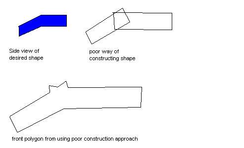

Building Efficient Levels
With annotations by Tom N Harris.
A Tutorial
This document attempts to expose you to the intricacies of creating a level which renders efficiently, that is, making levels that give good frame rate. The issue of how best to build efficiently, minimizing your time spent building it, is a separate one, and not considered herein.
To conduct this tutorial, you will need several things:
Any version of Dromed will do.
A running copy of dromed
This text, either on-line or printed. I recommend having it online--either run dromed in a window, or use two machines.
The "tutorial" levels, which can be found in r:\prj\cam\levels\opt. The levels are named t1.cow, t2.cow, t3.cow, etc. I recommend copying them to your local directory (just copy everything from r:\prj\cam\levels\opt) so that you won't have to type really long filenames. There may be a config variable you can use to force it to look there, but I don't know what it is. They eat up a lot of storage, so if you have them on the net, delete them when you're done.
The monolog command supersedes the use of an extra monitor.
A monochrome monitor is recommended, but not required.
You will also have to bring the following abilities to the tutorial:
You should be an experienced dromed level creator. This tutorial is not about using the tools, but rather about the unexpected consequences of how the underlying system works. You should be comfortable with the tools, or else you will gain little from the experience, although you don't actually need to be able to do much.
Alt-8 is show_cell in modern Dromed. And it does work in both game mode and the editor.
You need a command that lets you see the underlying world, such as show_cell. I recommend binding a hotkey to it, so you can toggle it on and off to see what's going on; e.g. bind alt-z show_cell. Unfortunately, this currently seems to produce a hotkey which only works in the editor--it won't work in game mode. Alternately, you can just stay in the show_cell mode the entire tutorial.
You need to know how to look at the rendered world, either game mode, or the "solid world" menu selection, or F2 in the editor.
We no longer need dos4gw.exe. Nor does anyone use Dromed in fullscreen mode.
You need to know how to portalize ('p') and optimize (optimize). Remember the following crucial rule for optimize: when you optimize, it creates "optimization hints", and turns on the "use optimization hints" flag, which is optimize_bsp. If you want to build a non-optimized level, you must turn off optimize_bsp. If you load a new level, you still have to turn it off by hand (this is a bug); otherwise you get the optimization hints for the other level, which will be very wrong. At the moment, running optimize in fullscreen causes problems. It seems to work fine in a window, but in fullscreen, if you're lucky, it will seem to close, bring up a dialog box warning of a problem; if you select "ignore", and then bring dromed back up (by clicking on it in the task bar or alt-tabbing to it), then it'll be fine. On some machines, it may just not work at all in fullscreen. Also, not that optimizing runs a separate program csgmerge.exe which is included in the release, but you need dos4gw.exe on your path to run it; if you're going to edit on a laptop or a machine at home, you'll have to make sure you have a copy of it (you can find it in n:\bin).
The editor has improved. Particularly Dromed2 which is much better at finding efficient splits.
The tutorial works as follows. In each section, you load a new level. This document describes the interesting aspects of the level, and you should look around at it as solid-world, normally (to make sure you understand the architecture) and in debug (e.g. show_cell) to reveal the underlying world representation ("worldrep"), which is the collection of cells and polygons. If you have a monochrome, you should portalize and look at the cell and polygon counts, and understand them. If you don't understand them, you're not really learning the lesson. I provide the cell and polygon counts in case you don't have a monochrome; if they're inconsistent, it's probably a typo on my part, although it's also possible that the editor has changed since when this tutorial was written, although it's unlikely, except for results from running optimize.
You should feel free to say to yourself "what happens if?" and change the level — delete a brush, change it from solid to air, etc. This is especially wise to review behaviors you've already explored — e.g. "If I delete this brush, it'll be just like that old case, right?". On the other hand, if you do too much "what if", you may get ahead of the tutorial...
Well, you're basically ready to start. Two important things to remember... One, I'm not going to say over and over "portalize, look at it normally, look at it in debug". I'll say it one more time (for the first level), but it would get really redundant otherwise. Two, if you give up on the tutorial, please jump to the end of this document, where I give a few rules of thumbs, and explain what you should come away from this tutorial thinking, and what lessons you shouldn't learn from this tutorial.
Many of the early levels are cleverly designed so they don't need optimization, just portalization. Don't worry about this cleverness, just trust me on it. Optimization is always required for large levels, no matter how clever you are.
Coplanar poly merging is the default in modern Dromeds. (We all know the error.) It's not worth turning off the flags except to see how much worse things would be without it.
The numbers I've reported for optimize are definitely inaccurate in the current skup (PA 1.04). You should be able to get the same numbers by toggling the commands split_polys and merge_polys so both are on. This is a little separate system from the optimizer which guarantees correct handling of coplanar polygons, and will probably soon default to on in a future skup. It also has the benefit of removing some excess polygon splitting that occurs sometimes, and that's the main reason you need it to get the optimize numbers.
t1.cow
Load up r:\prj\cam\levels\opt\t1.cow, or just t1.cow if you copied it locally. If you portalize, you will see that we have one cell, and six polygons. The six polygons is hopefully rather obvious. What do we mean it's one cell? Well, a cell is a convex region of space. Unfortunately, it's somewhat hard to visualize. To start with, we'll keep it simple by using levels which have a single floor & ceiling height, so you can just look at the floor plan to understand it. We'll come back to cells in the next level.
The room is a bit small; anything larger starts to cause polygon splits, but that's a lesson for later. We're mainly concerned about cells and portals for now, so ignore it and live with the fact that it's a tiny room.
You can do a show_cell but it won't reveal very much.
t2.cow
2 cells, 12 polygons
Here we've added a second brush, and now there are two cells. If you look at the floor polygons (especially under show_cell), you can see the boundary between the two cells. One easy way to see what's going on is that if the niche was still the same texture as the room, the floor could be one big polygon, except it would be concave. It's been split into two to make it convex, and because for now the floor represents our floor plan, the fact that the floor has to be two polygons means the world has to be two cells.
Note that the 12 polygons are not 6 for each cell, but rather 5 for each cell, plus 2 at the boundary between the two. If both brushes were equally wide, there'd be 10 polygons; if the niche were even wider, than the extra 2 would be in the other cell, and if the two brushes "dog-legged", there'd be one in each. But I can't be bothered to make sample levels to show you those, and counting polygons isn't really that important, I'm trying to focus on cells.
t3.cow
3 cells, 22 polygons
Now, just because there are two brushes doesn't mean we have to have two cells. Here I've done something of a hack to create two niches with only one brush, hence three cells from two brushes. Note that if you look at the top down view in the editor, it looks like there might be five cells, but in actuality, it only takes three to make it convex. In general, optimize is in charge of trying to actually achieve the minimum number, but for these simple levels, plain old portalization achieves it.
Because of the order of the brushes in time, there's checkerboard on the floor and ceiling. This is intentional to make it clear how the brushes work. If there's no checkerboard on the floor and ceiling (by fixing the timing), it'll be 3 cells and 18 polygons.
t4.cow
3 cells, 16 polygons
A rule of thumb I've talked about before is that niches are "cheaper" than protrusions. Here's a simple pillar. Look at the floor, and see how it's been made convex. Note that if it were textured differently, it would look more like two niches on the same side of the room.
t5.cow
3 cells, 16 polygons
Just to prove a point, here I've used two air brushes to build niches so the room looks basically the same as t4.cow, but now they really are niches. Lo and behold, the cell and polygon counts are identical. This is an important rule about levels — it doesn't matter how you build them, it just matters what the results are (this is only technically true if you optimize, and even then doesn't always quite work out). I didn't actually bother getting the textures perfect, and the room is a little bigger so the texture on the floor comes out differently, but you get the idea.
t6.cow
3 cells, 16 polygons
Here's the pillar again. Up until now, I've been careful to make sure brushes always stuck through each other. This time, the pillar brush is flush with the wall, with grid snapping on, so it is really well and truly flush. And the results, as you can see, are the same.
But what happens if we mess up a little?
t7.cow
4 cells, 20 polygons
I turned off grid snapping and moved the brush a tiny bit forward. That added a cell behind the pillar, and added quite a few polygons. Oops.
t8.cow
4 cells, 19 polygons
Now there's a bit of space above the pillar. Similar effect. (Don't forget to show_cell it.)
t9.cow
5 cells, 22 polygons
Now there's space above and below the pillar. In fact, rather than make it look like an error, it's now just a protrusion on the wall. I pushed it back through the wall so you can try making it "fill air" to compare niches versus protrusions. This is the simplest case of the difference. Making it a niche produces 2 cells and 14 polygons. Why's that? Well, the cells are obvious enough (I hope). Why the polygon count difference? If you look at show_cell with the niche, you can imagine "pulling the niche inside out" so it pokes into the room, so there'd still be only 14 polygons. In fact, in a Quake level, this is 14 polygons either way. But if you show_cell with the brush as a solid, you can see why it doesn't work that way. The room gets split up into 5 cells, and the polygons have to get split up into the cells as well. The floor ends being split into 4 polygons, as does the ceiling. (Quake does a similar operation to produce cell-like things, but doesn't always have to split polygons into them.)
t10.cow
2 cells, 12 polygons
We're back to a plain old pillar. This used to be t6.cow, which was 3 cells and 16 polygons. We've turned the pillar at an angle. That saves one polygon on the pillar itself (there's only two exposed surfaces); the other polygon savings come from the cell savings. Look at the floor and see how it's been split. Probably not how you or I would have done it; I'll come back to this in the advanced topics section. Nonetheless, it works.
Notice that so far, the rule of thumb is "there are as many cells as there are exposed pillar surfaces". This is true to a certain extent, but we'll come back to it in a bit.
First, let's screw up this brush a little bit.
t11.cow
4 cells, 20 polygons
Now we're back to being screwed up, much like when the pillar was out from the wall. There are two little niches behind the pillar, now, which creates two extra cells, and massively increases poly count.
To sum up this diagonal brush thing:
empty room: 6 polys
diag pillar: 12 polys
bad diag pillar: 20 polys
Ok, back to squared off pillars.
t12.cow
4 cells, 22 polygons
Dromed is now able to optimize this down to 3 cells. (Someone made Sean eat his words.)
Now there are two pillars on opposite sides of the room. Remember how one pillar created two niches? Well, two pillars create four niches. However, for obscure reasons, that's not how dromed ends up creating it. We get 4 cells, not 5. If you look at the cells, you can see that it found it could combine some of them. In fact, you could build this space with only 3 cells; unfortunately, even optimize doesn't find this way.
If we add corresponding beams to the floor and ceiling, we get the next level.
t13.cow
4 cells, 25 polygons
Now I've put beams on the floor and the ceiling, and you can see pretty clearly how there could be three cells (I hope). In fact, if you optimize this level, it should in fact decide that this is the smart way to split the level, and you'll get 3 cells and 22 polygons. Which is not bad compared to 3 cells and 16 polygons from the original one pillar!
t14.cow
10 cells, 55 polygons
Ok, here's the same basic idea, made to look like a real level. If you show_cells, you can see how it split things up. It's really important that the wall and ceiling beams are all the same width, so they line up, and allow the space to be split up differently.
optimize splits this into 7 cells, 48 polygons, and figures out the smart splitting.
Now, suppose we delete the ceiling bits, and misalign the pillars...
t15.cow
12 cells, 61 polygons
Now, even though the ceiling beams are gone, we have more polygons and cells. That's because the niches don't line up anymore, and because it exposed a bug in the level. Two of the pillars aren't grid snapped! But if you look at them all, they all have round numbers for their sizes and locations. Feel free to find them and fix them, which will bring it down to 10 cells and 55 polygons, the same as t14.cow, but with less visible geometry. In other words, by making the pillars line up on each side of the room, we were able to add the ceiling beams for free.
Let's return to smaller levels, and later we'll look at big stuff again.
t16.cow
3 cells, 17 polygons
Ok, we're back to a simple room with two pillars. This time, they're both diagonal. Now, it splits into 3 cells, which isn't bad--it's better than when we had two squared off pillars. In fact, recall that two squared off pillars used 4 cells, but could have been done in 3; in this case, we only use 3 cells, but you could do it in 2. show_cell and look at the floor; it's nothing like how a human would split up the room (by just splitting it down the middle). Note that the way one pillar got dealt with interacted with the other one (the lines on the floor meet). This is the sort of thing that introduces lots of cells when you build real levels.
To put that another way, when squared-off pillars just made "niches" right next to the pillars, the pillars were only having local effects; nothing else in the room was affected. But the diagonal pillars try to make niches next to them, but because of the angle of the brushes, the splits cross the room, where they may have non-local effects.
t17.cow
3 cells, 22 polygons
Now I put in two more pillars. However, there are no more cells. Because I made the pillars line up perfectly, you can now see what was going on with the previous level--you can see how it was splitting up into a room and two niches (now it's four niches).
t18.cow
5 cells, 29 polygons
Now I moved the brushes a little so they don't line up with each other any more. Whoops! Notice the two really thin cells. This is sort-of a non-local effect.
Well, this is probably a good time to explain this. The way the level thing works is not local; it doesn't try to build little adjacent niches. This might be a good way to do things, but turns out to be very hard, so we instead use a simple global algorithm, called bsp (it's a lot like the object rendering bsp, yes, but not identical). So, when we talk about the niches and stuff, that's just a simple way of trying to understand things. In reality, the program works in a radically different way, and can produce quite unexpected results.
Nevertheless, "niche" thinking tends to be a good way to understand stuff. I guess the rule of thumb is about right; every time you add a pillar poking into a room, you can expect to add a bunch of cells and polygons--the number of new cells is equal to the number of exposed surfaces on the pillar (minus one), and the number of polys is something like three times that (one for each surface, and one each for splitting the floor and ceiling). That means just adding a few separate pillars can make a room much more complex. However, the global properties come into play here; if you make things line up, like in t17.cow, you can save quite a few cells (and hence polys), because the global optimizer (i.e. optimize, and for simple levels even without) "knows" how to take advantage of it. Unfortunately, it also means that sometimes things come out a little less locally optimal than we'd like.
Let's look at this theory a little more, with some more complicated pillars.
t19.cow
4 cells, 18 polygons
Back to a single diagonal brush. Now I've shrunk it vertically, adding a cell above and below.
t20.cow
3 cells, 16 polygons
Here's a little trick from Mahk, a 3-sided pyramid poking in. Again, we end up with 3 cells, but look at how awkward the polygon splitting is. Imagine if there was geometry in those places!
t21.cow
6 cells, 28 polygons
Why imagine it? Here's a pillar. Look at what a mess it is! How are our numbers? Well, going from empty→pyramid was 1 cell, 6 polys→3 cells, 16 polys, or +2,+10. Going from empty→pillar (t4.cow) also produces 3,16, or +2,+10. So we would expect if they didn't interact, we'd get +4,+20, or a total of 5 cells and 26 polygons. Instead, they interact, and we get an extra cell.
Fortunately, we can optimize and improve things. optimizeing produces 5 cells and 24 polygons. The optimizer doesn't actually prioritize minimizing cells, rather it tries to minimize polygons, and as you can see it succeeds; it decides that rather than building two little niches next to the pillar (t4.cow), it should run a split across the middle of the room. This isolates the pyramid from the rest of the geometry in the room, and actually saves polygons (remember the above said we'd expect 5 cells and 26 polygons). In t20.cow, the pyramid split the ceiling, the floor, and the east wall into multiple polygons. Now, with the isolating split, the diagonal split coming from the pyramid is cut off from affecting more than the floor and ceiling.
t22.cow
5 cells, 25 polygons
So now the pillar is a diagonal pillar. Again, look at how the split plane ickily messes up the other half of the room. Of course, it's also obviously not actually needed. Again, optimize fixes this up, producing 4 cells and 21 polygons.
Let's look at a slightly simpler interaction:
t23.cow
4 cells, 21 polygons
Here we have two diagonal brushes at different angles interacting. optimize produces 3 cells and 19 portals, which isn't too bad.
t24.cow
3 cells, 18 polygons
I moved the vertical pillar over to the other side. Now the pillars just miss interacting.
t25.cow
4 cells, 24 polygons
And now I shrunk the room a little so they interact again. Notice this is still better than t22 was non-optimized. Surprisingly, even optimized, this doesn't get any better. (A hint as to why is that now the situation is symmetric. When it was asymmetric, there were more choices; i.e. if you look at how the floor is split, you can see that it could have matched either face of the pillar, but neither one produced different results, because the opposite pillar is arranged symmetrically. This is not to say that symmetry is generally bad; just that it means if it doesn't naturally optimize, it may come out worse.)
t26.cow
4 cells, 20 polygons
Hey, back to a single square pillar. Now it's out in the "middle" of the room, and we get even more cells than normal. Although it's still just one cell per visible face.
Suppose we put a bunch of them in, such that they don't line up?
t27.cow
10 cells, 44 polygons
Well, if each 4-sided pillar is supposed to add 3 cells, then 3 pillars would be 10 cells. Which is in fact what we get. (Why does it work out this way? Because adding one pillar splits the room into 4 "rooms". Each successive pillar only affects the one room it's "inside".) optimize can't improve this.
t28.cow
12 cells, 54 polygons
This seems like it's quite like the previous one, but now the pillars "overlap", in the sense that some pillars cross the lines on the floor caused by the other pillars. This causes extra splitting. However, optimize brings this back down to 10 cells and 46 polygons. There's still a few extra polygons, but it's close.
t29.cow
9 cells, 43 polygons
Now the pillars line up perfectly which each other. This saves one cell and one polygon versus t27.cow.
However, optimize knows how to take good advantage of it, and brings it down to only 7 cells and 36 polygons. To put that in perspective, if somehow the floor and ceiling could be drawn as one big polygon each, there at a minimum 18 polygons in the scene (6 in the room, and 4 on each pillar). The best split (which optimize doesn't find) would be 6 cells and 28 polygons.
t30.cow
6 cells, 32 polygons
And here's a simple row of pillars, which is much better. Unfortunately, while this one comes out well, placing the pillars north-south causes the room to come out less efficient, even after running optimize. (See level t30a.cow for an example.) This is due to a serious consequence of how optimize works; a rewrite of optimize might be able to avoid it, but I can't think of an algorithm off-hand. If you find this going on and want to micro-optimize it, try rotating the brushes 90 degrees. I know, that's pretty sad, but that's life.
Well, let's start looking at some other typical architectural features.
t31.cow
14 cells, 57 polygons
Here we have a simple door frame. Everything is grid-aligned, so there are no errors. And we only have a tiny bit of each room, yet we're already at 57 polygons (if our goal is ~250 per scene, that's already quite a lot, although in reality you only tend to see about 1/2 the polygons at a time [because half of them are facing away from you]). Without the door frame, it's only 2 cells and 13 polygons. So it would be nice if we could find some happy medium.
Ok, first of all, if we simply optimize, we're down to 6 cells and 33 polygons, and in any one scene it's pretty reasonable. But suppose we want to simplify it more anyway?
What exactly is this door frame creating? Well, it makes a niche above and on either side. Additionally, it's arranged so that it's visible from the other side, that is, it still pokes out. It doesn't create any extra niches on this case (it's like the beams in t13.cow), but it is real polygons. Suppose we only care about the door frame being visible on one side; so we could make it flush on the other side.
t32.cow
11 cells, 46 polygons
Well, let's not beat around the bush. optimize produces 5 cells and 29 polygons. Basically, we cut out a little geometric complexity (remember, there was really only one extra cell due to the corridor not being flush).
If we want to save a little more, we might decide that we don't really need the niche above the door. (On the other hand, it's only that niche that prevents this level from being buildable in Doom.)
t33.cow
8 cells, 37 polygons
optimize 4 cells 26 polygons
Well, optimized, that only saved us 3 polygons and 1 cell. If you looked at the niche above the doorway before, you'd have seen that it was in fact 3 polygons, so this isn't very surprising. We don't save any extra because there's really no more non-local effects.
So each of these changes saved us 3 and 4 polygons, which isn't much. Together, that's 7 polygons, out of the original 33 (only looking at the optimized numbers). That's actually 20%, which is worth remembering--if you don't really need the extra polygons, get rid of them.
Well, there's your simple doorway thing. Let's look at another architectural feature.
t34.cow
9 cells, 39 polygons
optimize 6 cells 28 polygons
Here's a simple set of stairs. There's some obvious stuff to notice: one cell per step, and the splitting of the polys along the stairs. Except for the ceiling, all of those extra polys are necessary to make the entire thing convex, so basically, this is close to as good as it gets.
There's really nothing better to do here; note that everything is grid snapped, and there is no space under the stairs. (If you want space under the stairs, you can make it, but your cell and poly count will increase.)
One useful thing to keep in mind; if you want to make the ceiling stairstep identically, make it line up with the steps below. (One way to do this would be to carve out vertical slabs of air extends from the top of the step to the ceiling above it, instead of building the steps out of solid). This will (hopefully) end up creating one cell per step, and no extra splitting (the wall will still split, but it needs it since it's not convex). You can see an example in t34a.cow.
t35.cow
35 cells, 118 polygons
optimize 13 cells, 65 polygons
Here's a very simple railing. Really, this is basically a bunch of pillars, plus the door frame thing. The door frame effect is because the railing is wider than the supports, so there's a little lip, and a bunch of polygons there. optimize gets paid the big bucks because it drastically simplifies this; notice, for instance, how that lip on the underside is one long polygon, which could only happen by having one long cell there, which is why the floor has the small polygon split out of it. On the other hand, you can get most of the optimization by hand by taking the last brush (the railing itself) and moving it back in time to time 2. Why? This is an advanced topic, discussed later.
(Also note that if you raycast lighting, the shadows caused by the supports are too fine to be reproduced. Hence such small features are probably a bad idea.)
Anway, this is pretty close to optimal, and it still uses way too many polygons. I also think if it were laid out north-south it wouldn't work as well, like the pillars before. Here's a version without the little overhang:
t36.cow
11 cells, 64 polygons
optimize 11 cells, 64 polygons
These come out identically because I did move the top railing to time 2. You can see that one side of the railing is split up in a stupid way, which is why the poly count is too high. This is the same problem as the north-south pillar thing I mentioned before. I have no good ideas for how to fix it.
Ok. Now let's make a big room with a couple of architectural features in it. I'll scale up the texture so the size of the room doesn't increase the poly count (this is a totally separate issue, sigh)...
t37.cow
34 cells, 153 polygons
optimize 20 cells, 127 polygons
Ok. Here's a simple room with a railing, stairs down, and a doorway out. I've made each of these optimal: the railing is flush, the doorway is flush with the corridor out and extends to the ceiling, and the stairs are perfectly matched together.
If you go into game mode and look at the stats, you'll see that you typically get ~50 polygons, and the worst case I could find (get in a corner so you can see the whole level) was ~95 polygons. A lot of that geometry is that railing, which is pretty excessive anyway. Later I'll try to make an even more complicated scene, to go for around ~200 visible polygons. But, first, let's consider how we might improve this area as it stands.
t38.cow
33 cells, 154 polygons
optimize 19 cells, 118 polygons
Here I've started "globally" optimizing, making things line up with other things. The railing is flush with the edge of the stairs, and both of them line up with the interior of the door frame. This doesn't help the non-optimized version, but the optimized one saves about 8% of the polygons. The worst case for the room is now about 70 polygons, which isn't as big a savings, but it's still moved down to the acceptability range.
Note that at this point, I haven't made any changes to the features themselves, just how they relate to each other. Removing the space between the railing and the stairs is quite visible, but could be acceptable.
A better thing to do at this step is to change the railing itself. I can make the supports larger, and have fewer of them. I also make them line up with the stairs, although in this case it turns out that they're not interacting with the stairs anyway. If the stairs were going up, they would interact, but then the railing wouldn't make any sense, so I'm not going to bother to show an example.
t39.cow
optimize 17 cells, 106 polygons
As expected, this saved a bunch. Note that the lighting is worse than it should be because I doubled the texture scale (which lowers the lighting resolution). I spent some time moving the light around to get a good shadow while I was at it. Actually, first I set the lighting to about 400, then moved it around and watched the shadow. The supports are still too narrow to produce good shadows on the floor, but the ones on the wall were pretty distinct. Then putting the lighting back down to 128 makes the shadows more subtle, and hides the fact that the floor doesn't come out that well.
t40.cow
optimize 15 cells, 99 polygons
Here I matched the railing and the door frame up, making the door frame look stupidly narrow, just to show the benefits. It only saved 7 polygons, but really, 7 polygons is close to 10%, and in fact we're down to 2/3 of the original 147. Now the worst case scene I can find is down to 65, although the typical case (when you can see the railing) is still around 50.
Let's move on to another architectural feature, the ramp.
t41.cow
6 cells, 31 polygons
Here I've built one of the shapes that is very difficult to build with CSG. At this stage 6 cells and 31 polygons might not sound so bad, but actually it is. Optimizing saves a couple polys. Obviously, when we look at in show_cell, there seems to be quite a few extra polygons. What's going on?
What's up here is that we haven't actually built what we were trying to build, and so optimization doesn't help. I've made the "error" exagerrated in the level; if you look close, you'll see what's going on, but here's some diagrams:

Using this approach, we end up with quite a few polygons on that front face, rather than just the ideal two. And the cells end up getting split similarly (each of the little notches in the front face is a "pillar" sticking into the space above the ramp.) With more care, we can make it so there's only one notch on top, instead of two, and it's possible to make things line up perfectly, but it's very hard, and it doesn't generalize well once we start connecting multiple ramps together.
This is one of the most signficiant limitations of CSG. CSG lets us use simple, abstract building materials, and carefully reproduces every detail. That's nice for making a door frame out of only three brushes, but it turns out to be a mess in this sort of situation.
The best thing we can do is try to chop off the pieces we don't want by using air brushes. We can lay an air brush flat on top of the horizontal segment by using grid snapping; however, we can't lay an air brush down perfectly flat on top of the sloped one.
There are two basic approaches to solving this, and both require air brushes: line things up so that there's only one notch, and it gets trimmed off with the unsloped air brush; or else build the entire sloped ramp by using an air brush. Here's what I mean:
t42.cow
9 cells, 33 polygons
optimize 4 cells, 21 polygons
Ok, so here I did it the way on the left, and I got more polygons and cells than before. However, once optimized, we get the expected benefit. Note that with the full merge/split stuff going to correctly handle coplanar polygons, you have to make the air brush have the right textures on the right surfaces. The south wall of the air brush is up against the wall, so needs the wall texture, whereas the bottom surface needs the checkerboard. What a pain. The second one is even worse.
t43.cow
11 cells, 37 polygons
optimize 4 cells, 22 polygons
This one is built the second way. This time it comes out a little less efficiently. The facing surface ended up getting split into three polygons instead of two. This is actually the same problem as the north-south row of pillars problem, but the details are a bit hairy. Suffice it to say, it's basically "close enough"; the fact that in this case one came out better than the other doesn't actually generalize, since other factors will affect this.
In general, the way on the left may be easier to build if you have one surface that's axis-aligned. The second approach is more general, and can be used for any sets of brushes coming together at any angle, assuming that is that they can be drawn in 2d. If one of them is rotated about its own axis as they come together (like those old diagonal pillars--if you try to make one of those meet a non-rotated pillar), then you're pretty much doomed trying to build a clean joint with CSG. One approach, especially if it's decorative, not a surface to walk on, is to put a big cube covering over the meeting point. This will most likely be simpler geometrically than the actual meeting point. (See t43a.cow and t43b.cow for an example; the polygon savings is small, ~10%, but you can see how non-physical architecture is replaced by something vaguely believable and a little cheaper--every little bit helps..)
The basic point here is that when you poke two angled brushes together, the "interior" edge comes out good (the bottom of the ramps in this case), but the top "edge" doesn't. So if we use another pair of angled brushes of the opposite medium, we can fix the top by making it derive from the interior of the new brushes.
If we wanted this sort of shape for a room, we would reverse the above media. In fact, that's pretty much how people currently make angled ceilings already--by taking one big air brush and then chopping out regions with solids. Take the right picture above, and imagine that the entire area under the red brushes was blue, and that the blue was the room with an air brush, and the red was the solids being uses to chop up the room, and you can probably see what I mean.
Let's put these numbers in perspective. The "poorly built" one was 5 cells, 29 polys optimized, and the "well built" one was 4 cells and 21 polygons. Here's a related but different thing:
t44.cow
6 cells, 28 polygons
optimize 6 cells, 26 polygons
This is the same thing but without them meeting. We'd expect it to be a lot like the sloppily-built ramp, because it has similar sorts of features. (When the ramp is properly built, the features line up so some of them are inside the others, and some exactly match.)
Now, let's look at the same thing, but a little bit harder. I'm not going to draw any more bitmapped diagrams like above, so you should look at the room to see the shape I'm producing, and you can try to look at the brushes themselves, but hopefully the written text here will be clear enough.
The reality is that this came out better than the sloppily-built ramp, but less well than the well-built ramp. Why? Well, compared to the well-built ramp, there's clearly just more exposed surfaces. There's also a more complicated breakup of space, because of the space between the two pieces.
But why is the sloppily-built ramp worse than each of these? Because the pieces poked through each other. This meant that each brush face appeared in multiple polygons. For example, the top of the flat brush appeared twice; to the right where it extended to the wall, and also to the left of where the sloping brush poked through it.
Now let's move on to making the more complicated variants of the ramp.
t45.cow
11 cells, 37 polygons
optimize 4 cells, 22 polygons
This is just t43, but upside down. Now the airbrushes have to clip the bottom of the brushes for things to come out right.
Now, if we want to build a ramp that connects two landings, it's just a combination of t43 and t45.
t46.cow
18 cells, 58 polygons
optimize 5 cells, 25 polygons
This is really hard to build, because the air brush for making a clean join with one landing interpenetrates the other landing. So we have two brushes for each landing, one which comes early and one which comes late. The early one defines the side that needs to be trimmed by air brushes; the late one defines the side that needs to be a solid joint (but gets messed up by an air brush from the other one). Go ahead and delete the current brush and see the notch that is produced.
So, when someone tells you "why's this level so inefficient; it's only got three brushes?", remember that sometimes, to build something that looks like it should only take three brushes, it may take 9 if you want to build it with no little nooks and crannies.
There may be a cleaner way to build this. Looking at it in show cell, one relatively clean way to build it is if you could make an air brush which looked the the shape of the niche, e.g. pull one edge way out, you could use a shape like that to carve out the platform and ramp.
On the other hand, if we use the approach from t42, it is a lot simpler:
t47.cow
16 cells, 54 polygons
optimize 5 cells, 25 polygons
This comes out the same, but it's a lot fewer brushes. Note however that it took a lot of tweaking to make the top and bottom ramps seem to line up (in actuality, the underside starts further to the right and ends further to the right). If you're willing to let this aspect be sloppy, this approach works. The other approach was easier in some ways.
t48.cow
18 cells, 72 polygons
optimize 9 cells, 50 polygons
Here's the beginning of a spiral ramp up around the outside edge of the room. I rely on the fact that I'm grid snapping the platforms, so I use the approach from t42. However, you end up needing an air brush above and below each platform, one for each ramp coming in. These airbrushes then tend to crop stuff out from the ramp unintentionally. If you look with show_cell, you'll see a few things. First, the air brush under the one platform that has two ramps has taken a notch out of the ramp leading up to it; this was the simplest thing I could find to do. Furthermore, there is excessive geometric complexity where the ramps meet the platform, because the ramp edges don't line up with the joins exactly. There is no way to make these match precisely using CSG.
(Note that I doubled the texture scale on the room to avoid getting splits due to large polygons.)
If we make the landings L shaped (using two brushes), we can simplify the problem a bit.
t49.cow
18 cells, 79 polygons
optimize 9 cells, 48 polygons
Here the landings extend out in an L, so that the place where they interact with the ramp is farther away from the wall. This makes it possible to keep one air brush from messing up a different ramp. It also saves a tiny number of polygons, although I don't know if that's always going to be true. This basically seems like the simplest way to do it, and it was still a lot of work trying to make the ramps pass through the landings cleanly. All I can suggest is that you try to recreate these ramp situations yourself, and if you can't get the same cell/poly counts I got, look very closely at exactly where my ramps pass through the landings. (Trying to build this, especially building multiple ramps that go all the way around, really makes me want to be able to hide individual brushes. Or realIy I just want to only see the ramp and the two landings I'm connecting.)
t50.cow
29 cells, 63 polygons
optimize 10 cells, 38 polygons
Here's Mahk's classic 6-sided star made from two strangely rotated cubes, and the top clipped off with an air brush. Optimizing helps quite a bit, although looking at it it doesn't seem that optimal.
t51.cow
25 cells, 68 polygons
optimize 10 cells, 58 polygons
Now, with two of them, the optimizer decides to split the room into a top & bottom; none of the weirdly angled split planes from the stars are allowed to affect anything except the very bottom of the walls, which helps quite a bit. Also, I made sure they were lined up, which just means two of the six diagonal planes from each one match up, which saves a little.
t52.cow
57 cells, 148 polygons
optimize 22 cells, 122 polygons
Now I added two more. This adds quite a few polygons. If you could get really high above the room, you could probably see them all, but typically from one corner of the room you can see about 80 of them at once. So it's pretty fast if there's nothing else in the room. If you check, you'll see that they no longer line up; because I couldn't let them grid snap, it was basically impossible to keep them lined up. It would probably help a bunch if I could have lined them up. The way to have done it would have been to have used the vsliders to force movement along only axis, but unfortunately I find them pretty painful to use, or use the keyboard, or type coordinates.
Now let's look at a different way of having many of them.
t53.cow
60 cells, 131 polygons
optimize 19 cells, 106 polygons
This works out quite similarly, except if you look at the portal count, you'll see that portals is larger than polygons. This is generally a bad thing. Ideally there'd be 2/3 as many portals as polygons, but we can live with about 1:1...
You can see that the optimizer again chose nice horizontal split planes to cut each level off from the others. Unfortunately, this produces these very thin cells, and quite a few portals parallel to the ceiling (portals being imaginary polygons at the boundaries of cells where there aren't actual polygons--i.e. polygons at the boundary between two cells).
t54.cow
34 cells, 135 polygons
optimize 15 cells, 81 polygons
Here's the same thing, but now made out of air. Thus, it's "niches" instead of "protrusions". However, since the niches aren't themselves convex, it doesn't help as much as you might expect. Still it saves a bit. But it looks less cool, I think (even if it were in the ceiling, where it might make some sense).
Each star shaped niche can be made 4 cells (1 large triangle making 3 points, and then 3 smaller triangles). In this case, with the current optimizier, it does this for the middle star, but the other two come out as 5 cells, one of which is a rhombus shape, with 4 smaller triangles dangling off. While not maximally efficient, it's still pretty close. Notice that since the point of each star pokes through the point from the next level, each point is forced to be split into two polygons. It would probably be a little cheaper if this didn't happen, but the portalizer tended to crash while I was trying to build it, I believe because the points were coming out too close to being right on the line or something.
Let's look at one more variant on the star.
t55.cow
19 cells, 64 polygons
optimize 13 cells, 53 polygons
If the front surface of the star isn't flush with the wall (if the airbrush that's clipping it is pulled out from the wall so the star sticks into the room), this produces 19 cells and 72 polygons optimized. So keeping it flush against the wall keeps it from splitting up the rest of the room, which is definitely a good thing.
Note that the air brush which trims it has the general room texture, and then a set of smaller brushes have been used to set the texture of the central star. This is because the main clipping air brush has to overlap the outside edges of the star as well...
Also notice that while this ends up with only 53 polygons, they're basically all visible when you stand back. (From the corner, you can see 52 polygons--all but the one behind you.)
Now let's make the same decoration but instead of having the star be grooves in the wall, have them be raised bumps. We expect the same poly count on the star features itself, but the room will become less simple, so it'll probably blow up the cell count and add some polys too.
t56.cow
21 cells, 78 polygons
optimize 18 cells, 72 polygons
As expected, the entire room gets split up into lots of cells, and everything is a mess. Note that visually, it's not that different than if the tiled surface were out at the front edge, which was t50, which had only half the polygons, unless you light it dramatically as I've done here--I used a simple, relatively bright texture for the ridges and let the lighting show what's going on. It takes a relatively nearby light to make it so distinct, and even so it's hard to see whether it's recessed or protruding if you're right in front of it. For me, t55 is pretty hard to parse, but I'm looking at a 320x200 window in a 1280x1024 screen, so perhaps fullscreen its more clear. Actually, playing with t56 more, raycast lighting makes a big difference--if it were a niche, it couldn't case a shadow on the wall it was set into, but not a niche, it can (although you have to position the light pretty carefully).
Advanced Concepts
Optimizing doesn't
Sometimes the way the optimizer splits the world into cells may seem a little odd, and not "optimal" at all. The most obvious case is in level t10, where the most natural-seeming split would be right down the middle of the room, along the plane connecting the edges of the pillars. It turns out the optimizer never even considers this split.
Unfortunately, the optimizer is a poor, stupid program and not a human being. It can't afford to consider every possible split. In fact, the only splits it does consider are the ones along the planes containing rendered polygons. It turns out that this is always sufficient to split the world up into convex cells, and it even avoids some problems that show up in non-optimized levels, where, for instance, an air brush fully contained in another air brush can still cause extra splitting.
But in the case of t10.cow, there is no rendered polygon in the plane connecting the two edges of the pillars. So the optimizer finds an alternative split of the room, which is too bad, since its approach unnecessarily splits the walls. But if the program had to try all the planes formed by every pair of edges, there'd be far too many planes, and it's not clear how many levels this would actually help much on anyway.
Of course, the optimizer is a whole lot better now. I don't know exactly how they improved CSG since then. It may just be the addition of coplanar polygon merging. Whatever it is, it works.
Also, even within this restricted choice of planes, the optimizer doesn't generally find the "optimal" splitting of the level. Instead, it has a set of simple rules of thumb (or "heuristics") with which it makes guesses about the best way to split the level. This process happens step by step, first choosing a plane with which to split the level into two pieces, and then going through the same process on each of the pieces, et cetera. It never backs up if a decision turns out to cause problems (which is called "backtracking" in computer science), nor does it consider the long-term ramifications of a given decision ("look-ahead"). It just makes the best decision it can based solely on the current situation and the heuristics (it is thus a so-called "greedy" algorithm).
The upshot of all this is that, except in very simple levels, the optimizer is unlikely to find the absolute best possible portalization of the level. But it does find very good ones, much better than by making these kinds of splitting decisions without any attempt at "optimality" (as happens in ordinary portalization).
Making "optimized" levels by hand
Tim is the reigning expert on this subject. When you portalize without optimization, dromed splits the world up with all of the brush planes. It turns out that many of them will be irrelevent and ignored, but some will not be.
The basic way it works is that every brush is split by all of the brushes before it in time, or rather all of the planes of all of the brushes before it.
This is also where blockable brushes show their usefulness. A blockable brush will force a split along its faces. So where the natural architecture doesn't provide a convenient niche in which to isolate smaller details, you can make an artificial zone to limit the extent of later cells.
What than means is that if you make a tiny little dense knot of stuff, and then a big room around it (even if that room swallows up all of the other stuff), the big room will be split by the all the little stuff. So the easy rule of thumb is to, in general, put large spaces earliest in time, and details later (assuming this doesn't interfere with the real use of time for building). The end result is that the details can't slice up the large spaces, and in fact they tend not even to slice each other up, because the large spaces cause sufficient splits to isolate the small spaces.
You don't really want to understand it any more than this.
If you've already built a level and want to tweak this stuff, you don't have to rebuild it in the right order; just slide the brushes around in time appropriately.
Bad polygon merger. No donut.
The way dromed works is that it generates a bunch of really tiny polygon fragments. (You can see them by disabling merge_nodes.) Then it tries to merge them back together. Unfortunately, optimal polygon merging is really hard, so dromed uses a rather simple merging algorithm. The upshot? Those places where the polygons seemed split stupidly, like the railing (t35.cow) or the north-south pillar case (t30a.cow), are due to this. (This then affects the optimizer, which thinks that since those polygons are already split up, it might as well put a cell boundary between them.)
If you have some bad polygon merging going on in front of you (from show_cell), you can try to tweak this by applying the above "optimized levels by hand" rules, and also by rotating brushes by 90 degrees, which effectively changes the order the brush faces split up the level.
Unfortunately, due to the global properties of optimization, the merging results might totally change on you if you move some unrelated stuff around and re-optimize. As they are wont to say, "Har."
Extra splitting
There are also two other kinds of splitting not caused by the planes of rendered polygons: large polygon splitting, and complex cell splitting. Large polygon splitting occurs when a polygon gets to be more than a certain number of texels tall or wide (I think it's probably about 224 or so). Note that it doesn't matter whether the texture on the wall repeats every 64 or 128; it's the total number of texels that counts. What does affect it is texture scale: the polygon still splits at the same number of texels, but each texel covers a larger or smaller area on the wall. As of this writing, our default texture scale is about half that of Quake, so for an equivalent sized room, we get twice as much splitting (in both dimensions, so 4x as many polygons).
Complex cell splitting occurs if a given cell has too many polygons in it; there's simply a limit on how many polygons can be in a cell. Such a cell gets locally split into one or more other cells.
Both can occur at once; if you make a very large room, large polygon splitting will create a ton of polygons, and then complex cell splitting may split the cell into several smaller cells.
Extra polygons created due to large poly splitting are reported on the monochrome during portalization. Complex cell splitting displays a warning that it is splitting a cell with a given number of polygons.
Conclusions
Another good use of show_cell is to quickly find trouble spots. You can concentrate on fine tuning areas of high complexity. Or to watch out for problem cells.
Well, now you know pretty much everything I know. Now, you might feel like you have a methodology for looking at areas to find out why they're not optimal, but, surprise!, that's not the point of this. I don't want you to feel comfortable with typing show_cell and investigating where your polygons are coming from; rather you should be able to expect it simply from what you're building. The methodology I've used here only works on small levels. Because the optimizer is global, it will never do quite as well as this when it's operating on a complete level. It will do nearly as well, but it will introduce additional splits that aren't really needed locally (because it's global). Now, you might want to sometimes try show_cell if things aren't coming out as well as you expect. Hopefully some day we'll have the level analyzer which will go find the slowest places in your level, and then you could try this methodology.
In other words, you're not building cells, you're building architecture. Make your levels look good first, you can tweak them down to optimize well afterwords. But having read all this, you can better anticipate potential difficulties and avoid building yourself into a bad situation.
So if the methodology isn't the point, what is? The point is that there are some rules, some analysis techniques, and given a particular rendered geometry (more or less regardless of how it's constructed) some predictability of the complexity of the final worldrep. Hopefully you feel somewhat closer to this knowledge than you did when you started.
Here are my rules of thumb:
Grid snap everything. Choose an appropriate grid scale to the size of the thing you're working on.
Make things line up if you don't really care about the extra polygons (e.g. door frame in t31..t33).
Make "unrelated" features line up to get global optimizations (e.g. pillars in t27..t30).
Be careful about poking brushes through other things, i.e. not flush. With parallel surfaces and the new coplanar polygon support, this can produce unwanted texture boundaries; with angled surfaces, it can accidentally produce extra unwanted geometry if there's poke-through, etc. Creating concavities like ramps requires lots of extra brushes (t41..t43).
Decorative geometry formed as a niche creates fewer cells (and hence polygons) than similar geometry protruding into a room (see t55,t56) but may look less cool, especially with shadows.
Fill in unwanted geometry (t43a,t43b).
stb 3/29/97